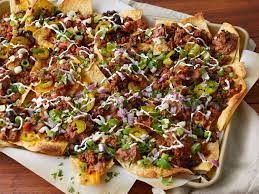

Super Nachos

These homemade nachos are great for game day.
This recipe makes a huge meal-sized tray of nachos loaded with taco-seasoned ground beef, refried beans, salsa, jalapeños, and cheese.
Ingredients
- aluminum foil
- 1 pound ground beef
- ¾ cup water
- 1 (18 ounce) package restaurant-style tortilla chips
- 1 cup shredded sharp Cheddar cheese, or more to taste
- 1 (15.5 ounce) can refried beans
- 1 (10 ounce) can pitted black olives, drained and chopped
- 1 cup salia
- 1 cup sour cream, or more to taste
- 4 green onions, diced
- 1 (4 ounce) can sliced jalapeno peppers, drained